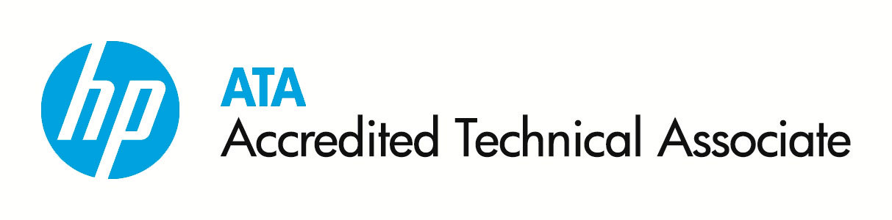
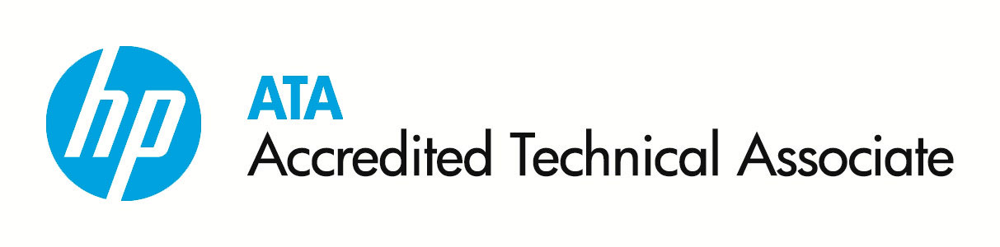

CNT – Centro de Nuevas Tecnologías
En el Centro de Nuevas Tecnologías, se encuentran ubicados los laboratorios de especialidad para las carreras de Ingeniería en Telemática e Ingeniería en Tecnologías de la Información y tiene por objetivo ser complemento de los conocimientos adquiridos por los alumnos en sus materias, desarrollando habilidades a través de la práctica y el uso de los equipos de los laboratorios especializados.
Acorde con la misión de la UPSLP, el CNT contribuye a la formación integral a través del desarrollo y la aplicación del nuevo conocimiento, poniendo a disposición la infraestructura y recursos humanos necesarios para que el estudiante pueda perfeccionar sus habilidades más allá de la enseñanza dentro del aula, permitiendo que los estudiantes estén en contacto con equipamiento similar al que se encuentra dentro del sector productivo, y donde en un futuro se podrán desarrollar.
En relación a la visión institucional, en este centro se busca que a través de las prácticas guiadas se fomente el uso eficaz de la infraestructura para el trabajo académico, manteniéndose a la vanguardia en la incorporación de nuevas tecnologías como parte fundamental del proceso de formación.
El CNT, está disponible para cualquier actividad académica, para estudiantes y docentes que pertenezcan a las carreras de ITI e ITEM, como una opción para facilitar el escenario académico para el desarrollo de actividades formativas, actitudinales y de preparación para el fortalecimiento de habilidades técnicas y específicas para estas áreas. En general son para uso en docencia, investigación, vinculación y consultoría.
Actualmente el centro cuenta con 16 laboratorios especializados, que se han equipado en fases de acuerdo a las diferentes áreas del conocimiento como robótica, programación, seguridad informática, cómputo forense, cableado estructurado, antenas, cómputo ubicuo, desarrollo de software, redes y comunicaciones, telecomunicaciones, Interacción Humano-Computadora, certificaciones de IT ESSENTIALS© y CCNA©, centro certificador Conocer, Certiport© y Pearson Vue©, entre otros.
El personal que actualmente colabora en el área de CNT es el siguiente:
- Ing. Atzel Yazmin Rivas Ortega: Laboratorios de ITI y Programación Aplicada
- Ing. Luis Fernando Turrubiartes Gómez: Laboratorios de ITI y Programación Aplicada
- Ing. Hugo Hever Olvera Youshimatz. Laboratorios de ITEM y Especializados para ITI e ITEM
- Ing. Manuel Alejandro Camarillo Dorantes: Laboratorios de ITEM y Especializados para ITI e ITEM
LC20: Laboratorio de Computación Aplicada
Este escenario cuenta con equipamiento para realizar prácticas de Robótica y Programación Aplicada; ya que cuenta con equipo de cómputo básico, kits de armado y programación de robots Lego, así como la posibilidad de trabajar con otro tipo de tecnología, como Arduino.
En el laboratorio LAPLA, se llevan a cabo prácticas para las materias de Introducción a la Computación, Programación I, II y II, Lenguajes de Programación y cualquier otra materia que requiera el desarrollo de proyectos utilizando la programación y la robótica.

LC21: Laboratorio de Cómputo Ubicuo y Seguridad (Ubilab Research and Development)
Este es un laboratorio principalmente diseñado para el desarrollo de proyectos relacionados con las áreas de Seguridad Informática y Programación para Dispositivos Móviles.
Se encuentra equipado con equipo de cómputo con variadas características técnicas, que permiten al estudiante explorar desde una perspectiva práctica desarrollos relacionados con el cómputo Ubicuo, así como llevar a cabo prácticas relacionadas con áreas específicas de la seguridad informática tales como Hacking Ético, Cómputo Forense, entre otras.

En este escenario se impulsa el desarrollo de proyectos de software que ayuden a generar soluciones en un entorno real, principalmente en la parte del desarrollo de aplicaciones para dispositivos móviles, realidad aumentada y cómputo móvil.
Uno de los más recientes desarrollos que se generó dentro del laboratorio UbiLab R&D, es la aplicación para dispositivos móviles con plataforma Android para evitar extorsiones telefónicas llamada XTOR®; para el desarrollo de esta aplicación se contó con la participación de 2 alumnos de la carrera de Ingeniería en Tecnologías de la Información los cuales durante aproximadamente 4 semanas trabajaron en un proceso formal de desarrollo el cual incluye, obtención de requerimientos, diseño de la aplicación, desarrollo de la misma, pruebas de funcionalidad y de usabilidad principalmente
LC24: Laboratorio de Desarrollo de Software
Es de uso específico para proyectos de Investigación, Desarrollo e Innovación de Software (I + D + i). En este laboratorio los alumnos cuentan con las herramientas necesarias para llevar a cabo las distintas actividades relacionadas.
Laboratorios Especializados
Este laboratorio especializado da soporte también a materias como: Ingeniería de software I y II, Sistemas Virtuales, Ingeniería de Requerimientos y Modelado de sistemas.
LC25: Laboratorio de Sistemas Embebidos
Este laboratorio se encuentra equipado con diferentes sistemas especializados y de control, que le permiten al estudiante llevar a cabo prácticas en diferentes entornos de trabajo de sistemas operativos como Solaris©, Linux©, Windows©.
También es utilizado por los estudiantes para el desarrollo de proyectos relacionados con la creación de aplicaciones y el control de dispositivos a través de equipos y tecnologías como Arduino© y Freescale©. Ya que la UPSLP cuenta con equipo especializado de estas marcas porque forma parte de la red de Instituciones Educativas asociadas con Freescale© para el desarrollo de proyectos e investigación.
- Tarjetas y componentes Arduino© para Sistemas Distribuidos
- Desarrollo de sistemas embebidos
- Ensamblado y programación de Drones
- Prototipo Freescale® para NXP Cup
- Prueba de Software de Realidad Virtual en Oculus Rift©
LC26: Laboratorio de Interacción Humano-Computadora
En este laboratorio se realizan desarrollos de sistemas, que además de llevar al estudiante al análisis profundo y su perfeccionamiento, permiten al estudiante la investigación de campo analizando resultados post desarrollo, que le permitan obtener resultados del intercambio de información de algún tipo de software y/o hardware entre los usuarios y las computadoras.
- Pruebas de Interacción Humano Computadora
- Mejora y análisis de resultados de pruebas de IHC
El resultado de estos estudios permitirá a los estudiantes completar y perfeccionar sus desarrollos o implementaciones, buscando minimizar errores de manipulación, incrementar la satisfacción del usuario, hacer más eficientes las tareas y operaciones rutinarias. Teniendo como resultado mejores interfaces para sus sistemas, mejoras en el diseño de la interfaz, uso efectivo de cada uno de los módulos que integran estos sistemas.
LC28: Laboratorio de Computación Aplicada
Este escenario cuenta con equipamiento para realizar prácticas de Robótica y Programación Aplicada; ya que cuenta con equipo de cómputo básico, kits de armado y programación de robots VEX, así como la posibilidad de trabajar con otro tipo de tecnología.
En el laboratorio LAPLA, se llevan a cabo prácticas para las materias de Introducción a la Computación, Programación I, II y II; también es utilizado por los integrantes del club de robótica y por estudiantes de la carrera de ITMA, que deseen realizar prácticas con el equipo VEX.
- Accesorios y componentes para VEX©
- Área de pruebas de prototipos VEX© y NAO©
- Área de desarrollo y programación de robots.
- Prototipo base competition®
- Prototipo experimenta
LC29: Laboratorio de Telecomunicaciones I
Este escenario es un lugar de experimentación para prácticas relacionadas con la señales y sistemas, líneas de transmisión y antenas, desarrollo de prototipos de circuitos digitales, modulaciones y redes de telecomunicaciones.
- Analizador de espectro
- Central Telefónica PCM
- Equipo de medición y experimentación para respuesta en frecuencia de diversas antenas
- Generadores de función, osciloscopios, fuentes conmutadas y multímetros
LC30: Laboratorio de Telecomunicaciones II
En éste laboratorio cuenta con equipos de cómputo para adquisición de datos, procesamiento de señales e instrumentación virtual básica. Tiene un alto perfil de desarrollo al contar con software de simulación de circuitos, programación gráfica y secuencias matemáticas de control.
En éste escenario el alumno será capaz de experimentar con los diversos tipos de modulaciones digitales (FSK, ASK, PSK) y analógicas (AM-SSB, FM, PM), secuencias y técnicas de trasformación para modulaciones analógica-digital (PAM, PCM, PWM).
- Equipo de cómputo para adquisición de datos y simulación
- Módulo de experimentación Lucas Nülle® para modulaciones
- Receptor microondas completo con antena parabólica
- Transmisor microondas completo con antena de bocina
Azotea de CNT: Enlace EDUSAT®
El Centro de Nuevas Tecnologías cuenta con una antena parabólica para el enlace en banda C con el satélite Eutelsat® 117 (antes Satmex® 8) equipada con decodificador, LNBF y herramienta necesaria para el armado, ajuste y orientación como práctica en la materia de microondas y satélites.
- Antena parabólica sólida de 1.8m
- Parámetros de configuración del decodificador
- Decodificador MPEG-2 DVB
- Inclinómetro para orientación de la antena
LC31: Laboratorio de LabView©
Este laboratorio, se encuentra equipado con lo necesario para que el estudiante pueda lograr la certificación básica de LabView© en la parte de adquisición de datos.
El equipo principal con el que cuenta este escenario son USRP© de 2 GHz, USRP© de 4 GHz, Elvis©, Emona© y diferentes accesorios para su uso en multímetro y osciloscopio.
Este espacio puede ser utilizado para el desarrollo de prácticas de las siguientes materias especializadas: Sistemas Digitales, Comunicaciones I, Comunicaciones II, Telemática II, Sistemas Telemáticos I, Sistemas Telemáticos II y Circuitos Eléctricos II.
- NI Emona DATEx©
- NI ELVIS II©
- NI MyDaq©
- NI USRP 2920©
LC32: Laboratorio de Cableado Estructurado y Desarrollo de Proyectos
Este laboratorio, gracias a que cuenta con equipo diverso para realizar el proceso de armado e instalación de cableado de acuerdo a las normas vigentes de la IEEE© y la EIA/TIA©, cubre las prácticas necesarias de las materias asociadas con la Certificación y especialización en Cableado Estructurado, que es una materia básica para la carrera de Ingeniería en Telemática. Contando con todo el equipo requerido como herramientas, equipo de comunicaciones, equipo de telefonía, así como algunos equipos para el diagnóstico posterior a la instalación.
- Conmutadores telefónicos híbridos
- Herramienta y equipo de experimentación para fibras ópticas
- Prueba de láser 650nm para transmisión en fibra.
- Tablero eléctrico de distribución completo
En un futuro se prevé que este laboratorio se encuentre equipado con lo necesario para para trabajar las prácticas que se requieren para la obtención de la certificación CCNA SECURITY©, como equipos de seguridad especializado y equipo de comunicación
Laboratorios Especializados
Este laboratorio especializado da soporte también a materias como: Ingeniería de software I y II, Sistemas Virtuales, Ingeniería de Requerimientos y Modelado de sistemas.
LC25: Laboratorio de Sistemas Embebidos
Este laboratorio se encuentra equipado con diferentes sistemas especializados y de control, que le permiten al estudiante llevar a cabo prácticas en diferentes entornos de trabajo de sistemas operativos como Solaris©, Linux©, Windows©.
También es utilizado por los estudiantes para el desarrollo de proyectos relacionados con la creación de aplicaciones y el control de dispositivos a través de equipos y tecnologías como Arduino© y Freescale©. Ya que la UPSLP cuenta con equipo especializado de estas marcas porque forma parte de la red de Instituciones Educativas asociadas con Freescale© para el desarrollo de proyectos e investigación.
- Tarjetas y componentes Arduino© para Sistemas Distribuidos
- Desarrollo de sistemas embebidos
- Ensamblado y programación de Drones
- Prototipo Freescale® para NXP Cup
- Prueba de Software de Realidad Virtual en Oculus Rift©
LC26: Laboratorio de Interacción Humano-Computadora
En este laboratorio se realizan desarrollos de sistemas, que además de llevar al estudiante al análisis profundo y su perfeccionamiento, permiten al estudiante la investigación de campo analizando resultados post desarrollo, que le permitan obtener resultados del intercambio de información de algún tipo de software y/o hardware entre los usuarios y las computadoras.
- Pruebas de Interacción Humano Computadora
- Mejora y análisis de resultados de pruebas de IHC
El resultado de estos estudios permitirá a los estudiantes completar y perfeccionar sus desarrollos o implementaciones, buscando minimizar errores de manipulación, incrementar la satisfacción del usuario, hacer más eficientes las tareas y operaciones rutinarias. Teniendo como resultado mejores interfaces para sus sistemas, mejoras en el diseño de la interfaz, uso efectivo de cada uno de los módulos que integran estos sistemas.
LC28: Laboratorio de Computación Aplicada
Este escenario cuenta con equipamiento para realizar prácticas de Robótica y Programación Aplicada; ya que cuenta con equipo de cómputo básico, kits de armado y programación de robots VEX, así como la posibilidad de trabajar con otro tipo de tecnología.
En el laboratorio LAPLA, se llevan a cabo prácticas para las materias de Introducción a la Computación, Programación I, II y II; también es utilizado por los integrantes del club de robótica y por estudiantes de la carrera de ITMA, que deseen realizar prácticas con el equipo VEX.
- Accesorios y componentes para VEX©
- Área de pruebas de prototipos VEX© y NAO©
- Área de desarrollo y programación de robots.
- Prototipo base competition®
- Prototipo experimenta
LC29: Laboratorio de Telecomunicaciones I
Este escenario es un lugar de experimentación para prácticas relacionadas con la señales y sistemas, líneas de transmisión y antenas, desarrollo de prototipos de circuitos digitales, modulaciones y redes de telecomunicaciones.
- Analizador de espectro
- Central Telefónica PCM
- Equipo de medición y experimentación para respuesta en frecuencia de diversas antenas
- Generadores de función, osciloscopios, fuentes conmutadas y multímetros
LC30: Laboratorio de Telecomunicaciones II
En éste laboratorio cuenta con equipos de cómputo para adquisición de datos, procesamiento de señales e instrumentación virtual básica. Tiene un alto perfil de desarrollo al contar con software de simulación de circuitos, programación gráfica y secuencias matemáticas de control.
En éste escenario el alumno será capaz de experimentar con los diversos tipos de modulaciones digitales (FSK, ASK, PSK) y analógicas (AM-SSB, FM, PM), secuencias y técnicas de trasformación para modulaciones analógica-digital (PAM, PCM, PWM).
- Equipo de cómputo para adquisición de datos y simulación
- Módulo de experimentación Lucas Nülle® para modulaciones
- Receptor microondas completo con antena parabólica
- Transmisor microondas completo con antena de bocina
Azotea de CNT: Enlace EDUSAT®
El Centro de Nuevas Tecnologías cuenta con una antena parabólica para el enlace en banda C con el satélite Eutelsat® 117 (antes Satmex® 8) equipada con decodificador, LNBF y herramienta necesaria para el armado, ajuste y orientación como práctica en la materia de microondas y satélites.
- Antena parabólica sólida de 1.8m
- Parámetros de configuración del decodificador
- Decodificador MPEG-2 DVB
- Inclinómetro para orientación de la antena
LC31: Laboratorio de LabView©
Este laboratorio, se encuentra equipado con lo necesario para que el estudiante pueda lograr la certificación básica de LabView© en la parte de adquisición de datos.
El equipo principal con el que cuenta este escenario son USRP© de 2 GHz, USRP© de 4 GHz, Elvis©, Emona© y diferentes accesorios para su uso en multímetro y osciloscopio.
Este espacio puede ser utilizado para el desarrollo de prácticas de las siguientes materias especializadas: Sistemas Digitales, Comunicaciones I, Comunicaciones II, Telemática II, Sistemas Telemáticos I, Sistemas Telemáticos II y Circuitos Eléctricos II.
- NI Emona DATEx©
- NI ELVIS II©
- NI MyDaq©
- NI USRP 2920©
LC32: Laboratorio de Cableado Estructurado y Desarrollo de Proyectos
Este laboratorio, gracias a que cuenta con equipo diverso para realizar el proceso de armado e instalación de cableado de acuerdo a las normas vigentes de la IEEE© y la EIA/TIA©, cubre las prácticas necesarias de las materias asociadas con la Certificación y especialización en Cableado Estructurado, que es una materia básica para la carrera de Ingeniería en Telemática. Contando con todo el equipo requerido como herramientas, equipo de comunicaciones, equipo de telefonía, así como algunos equipos para el diagnóstico posterior a la instalación.
- Conmutadores telefónicos híbridos
- Herramienta y equipo de experimentación para fibras ópticas
- Prueba de láser 650nm para transmisión en fibra.
- Tablero eléctrico de distribución completo

 
